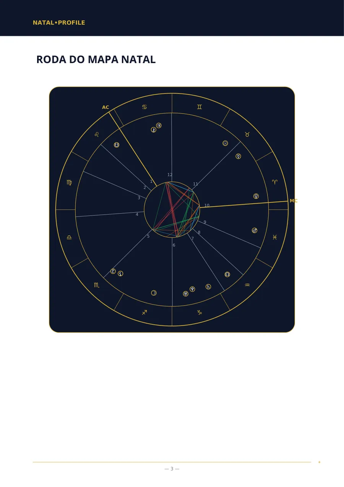
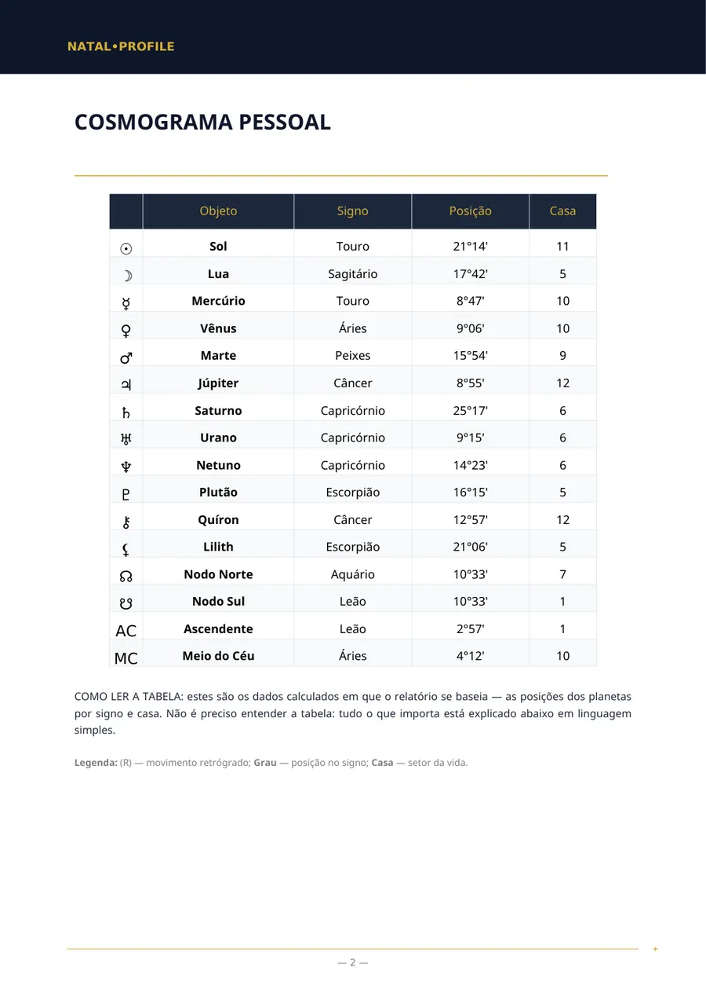
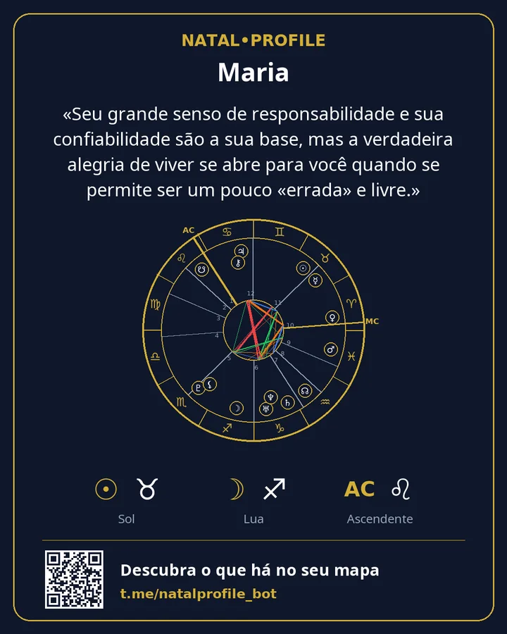

Mapa Natal (Análise Completa)
Uma análise completa do seu caráter a partir da data, da hora e do local de nascimento.
- 250 ⭐ Telegram Stars
- 9 capítulos
O que tem dentro
- Quem você é: a primeira impressão e seu verdadeiro eu
- Como você pensa e toma decisões
- Sentimentos e energia: o que lhe traz plenitude
- Desafios que podem se tornar suas forças
- Trabalho e seu lugar entre as pessoas
- Amor e relacionamentos próximos
- Áreas para seu crescimento
- Corpo e energia
- O principal: por onde começar
Para quem é
- Você quer entender seus pontos fortes e o que impede de usá-los.
- Você sabe sua hora de nascimento com precisão de cerca de meia hora.
- Você quer um texto coerente, não uma tabela de graus.
O que você informa
Nome, gênero, data, hora e cidade de nascimento.
Páginas de exemplo
Páginas reais do relatório «Mapa natal». É um exemplo: os dados de nascimento são fictícios.



Outros relatórios
Mapa Natal (Análise Básica)
Uma análise do seu caráter quando a hora de nascimento é desconhecida.
150 ⭐6 capítulos · Detalhes →
Análise de Compatibilidade (Completa)
Duas pessoas: o que atraiu vocês, onde discordam e o que dão um ao outro.
250 ⭐6 capítulos · Detalhes →
Análise de Compatibilidade (Básica)
Compatibilidade de caráter quando a hora de nascimento é desconhecida.
150 ⭐5 capítulos · Detalhes →
Análise de Carreira e Finanças
No que você é forte no trabalho, quais ocupações combinam com você e como lida com dinheiro.
200 ⭐7 capítulos · Detalhes →